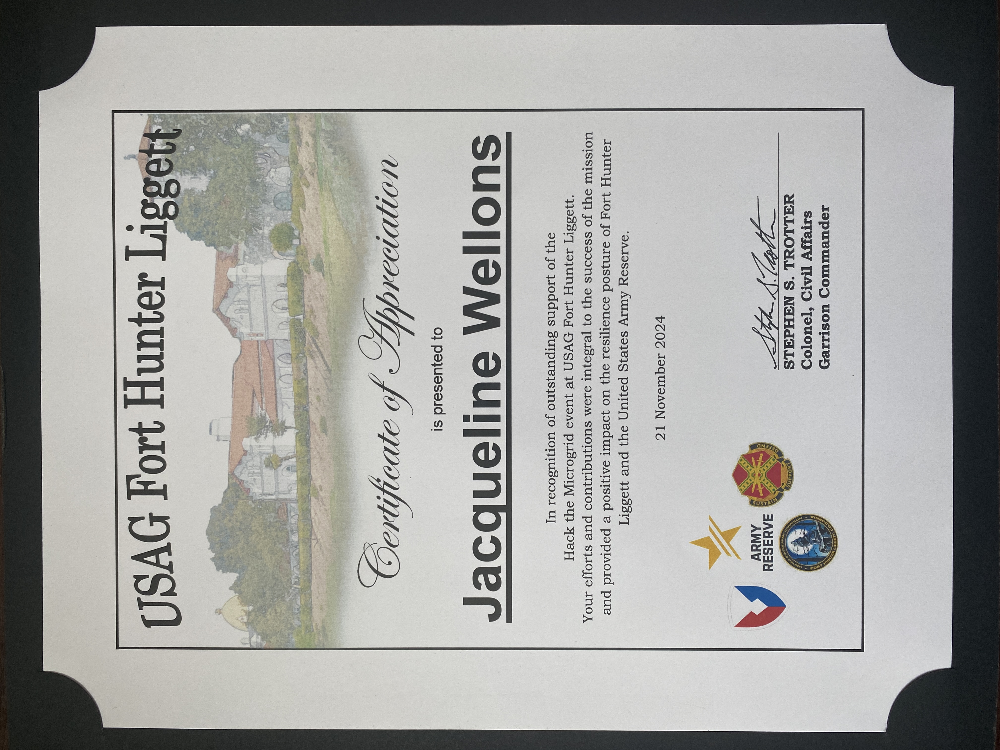
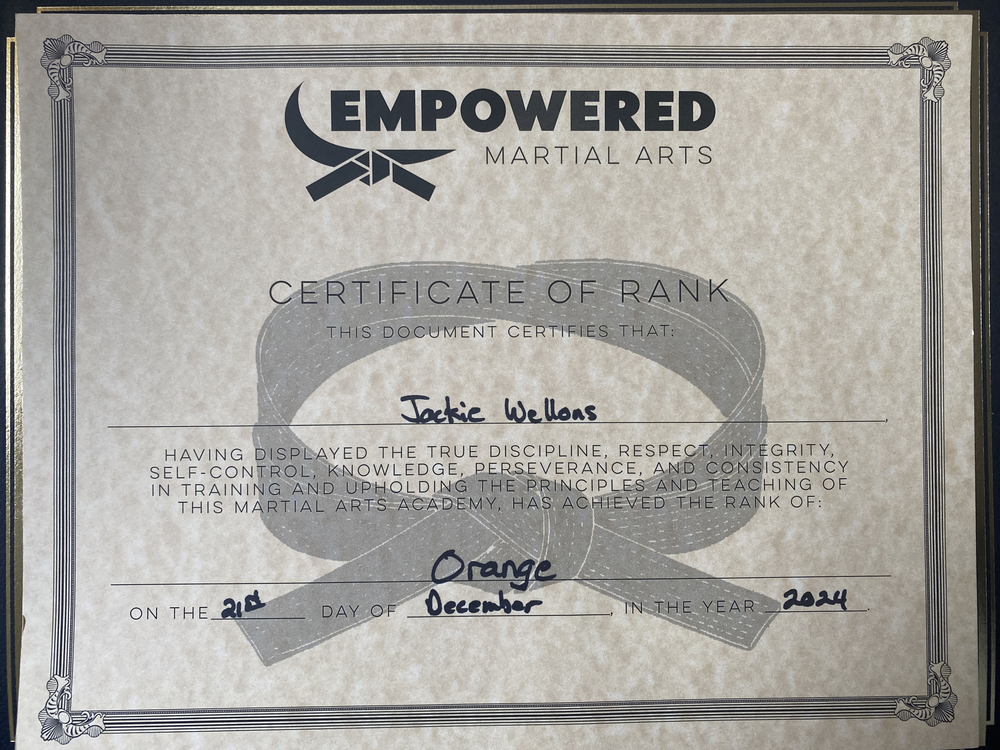

Recent Adventures and Accomplishments
USAG Fort Hunter Ligget
One of the hardware bashes I attended at the end of 2024 gave me the opportunity to ride in a helicopter, which was on my bucket list. I was also able to attend training to learn more about the hardware we were testing about a month before, and after a successful event I was presented with that certificate of appreciation. Only a few of us received one, and it was an amazing honor to be presented with it.



Martial Arts
I started taking martial arts in high school, and I had to stop when I went away to college. I earned an orange belt a mix of Judo and Hapkido. It was something I wanted to take classes in again, and I was finally able to do that. Now I am taking a mix of Jiu-Jitsu, Karate, and Muay Thai self defense. I recently earned my orange belt, so I caught up to where I left off. I am continuing to work towards my next rank. It's nice to step away from technology and completely unplug for a few hours every week.
